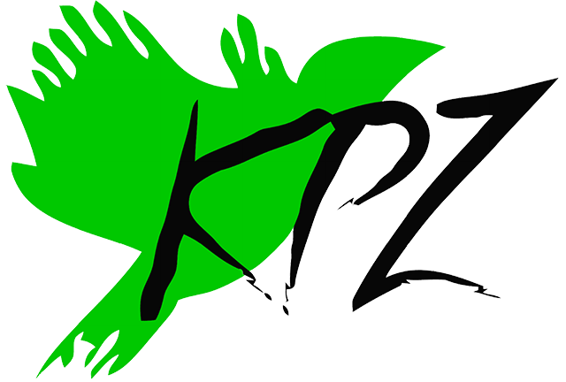

Mléčné chovy · Česko
≤ 12 h
podle chovatelských příruček
V praxi často: hned
Samo v boxu · často až 8 týdnů
Společenské zvíře
Krávy jsou
Cítící
bytosti
Olizuje ho hned po porodu
Poznají se po hlase
Silné pouto matky a telete
Ať hned, nebo později:
Oddělit mládě od matky je
kruté.
Proč se to dělá?
Několik argumentů
4
nejčastější
1
Hygiena
2
Zalehnutí
3
Pouto
4
Přebytek mléka
1
Hygiena
Kravín
Spousta krav na malé ploše
Přehled studií · Beaver et al. 2019
Přínos časného oddělení pro zdraví telat:
neprokázán
Tzv. masné krávy:
telata s matkami měsíce
Problém
Přeplněný, špinavý kravín
Řešení
Víc prostoru a úklid
Odebrat tele
2
Zalehnutí
Hodně zvířat, málo prostoru
Tzv. masné krávy: prostor
Problém
Málo prostoru
Řešení
Víc prostoru
Odebrat tele
3
Pouto
Reakce na odloučení · schéma
1. DEN
POZDĚJI
✓ To je pravda
Předpoklad: stejně je rozdělí
Delší společný čas · přehled studií
✓
přirozenější chování
✓
rychlejší růst
Takže aby je odloučení nebolelo,
odloučí je
dřív.
4
Přebytek mléka
Pro tele
„Tele by to nevypilo“
Šlechtění na co nejvyšší výkon
Dojivost · Česko · litrů na krávu za rok
CCA 1990
2024
3 800
9 574
Tele: ~8–15 l denně
Tzv. dojnice:
~30 l denně
Problém není tele.
Krutá mašina na mléko
Bizarní kruh
Velkokapacitní
kravín
Málo místa,
výkaly
Přešlechtěné
krávy
Nákazy, zalehnutí,
přebytek mléka
„Nutné“
oddělení
Krutá praxe
= „nutnost“
Jde to jinak
Mléčné farmy · 6 zemí Evropy
104
farem: tele s matkou
7 až 305 dní
✓
krávy se dojí a telata přitom sají
Přebytek mléka = výmluva
Okamžité oddělení
nutné není.
Není to ideál
Býčci
nedávají mléko
Jatka
Tzv. dojnice
klesne dojivost
Jatka
Zvíře
není
stroj ani zboží.
Nabídka a poptávka
Poptávka
Nabídka
Kupujeme
Rostlinné alternativy

Kolektiv pro zvířata
Zdroje v popisku